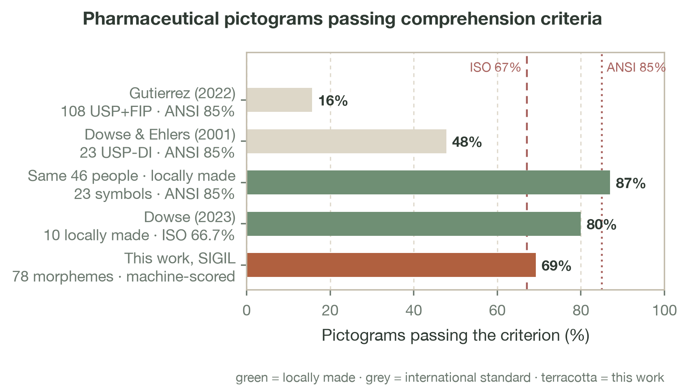
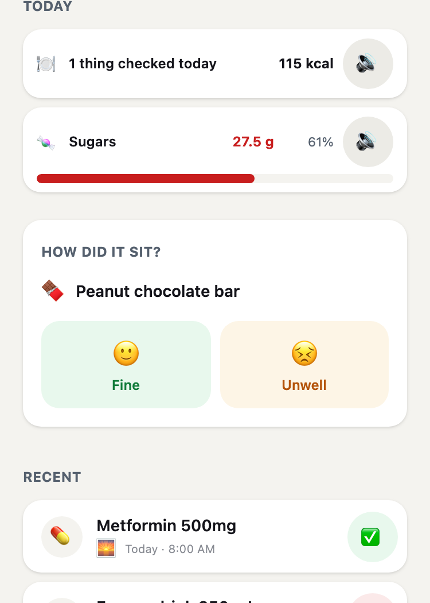
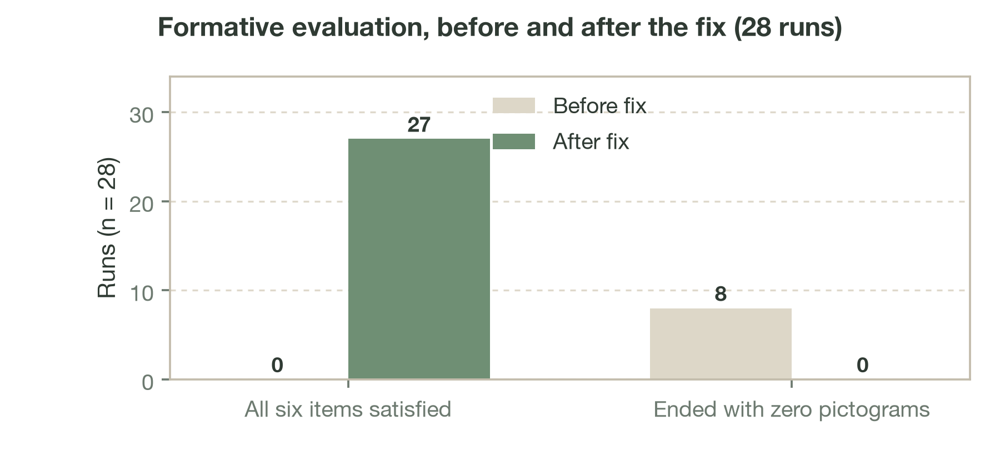
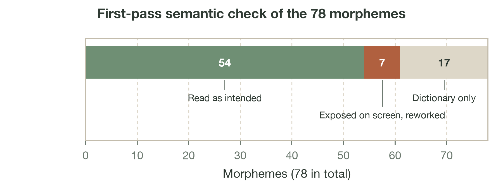

you never have to read.
Republic of Korea & Republic of Moldova · hosted by the Ministry of Education


basic literacy skills
ANSI comprehension threshold
from, rather than selects
answered our survey

1The problem
A prescription is written to be read. From the moment it is handed over everything depends on the patient's ability to read it, and for a large population that ability is absent or partial. In Korea 39.6% of adults do not reach a sufficient level of health literacy; among those aged 65 and over it is 59.7%.
Removing text is necessary but not sufficient. Pictures can fail to be read as well: in the Philippines only 17 of 108 pictograms reached the ANSI Z535.3 threshold among 52 adults [1].
Existing sets are lists of pictures. A set of n drawings can say n things; an instruction not drawn in advance cannot be said at all.

2What must be true
At no point on the path to a judgement is the user required to read or type.
Two channels are laid so that neither leans on the other. The pictures alone, or the speech alone, must reach the same instruction. Text stays on screen for those who can use it, but the instruction has to survive without it.
3How it works
- Photograph. The user points the camera at a prescription. Nothing is typed and no object has to be chosen first.
- Read on the device. Text recognition and form parsing run in the browser. Drug, dose, frequency, timing, duration, storage and contraindications are extracted; the photograph never leaves the device.
- Compose the pictures. SIGIL builds each frame on the spot from morphemes, so an instruction nobody drew in advance can still be shown.
- Rebuild the sentence. VOCA keeps only what the patient needs; the verb and the body site follow from the dosage form.
The three layers of delivery overlap rather than substitute. Any one of them failing still leaves the instruction standing, which is why none of them is allowed to be the only carrier of a warning.
SIGIL composed pictogram
VOCA reconstructed sentence
never colour alone

4SIGIL — a grammar, not a list
A head stands on its own; a modifier cannot, and goes into a slot inside a head. Five operators apply on top. The 78 were derived backwards from the distribution of medication error.
| Element | n | Examples |
|---|---|---|
| Head | 57 | pill_bottle, allergen_peanut |
| Modifier | 21 | time_morning, storage_fridge |
| Operator | 5 | no{}, half{}, twice_daily{} |
| Morphemes | 78 | composed, not selected |


5One prescription, composed
The prescription text is passed through the same path the camera uses. The output below is reproduced verbatim.
Amoxicillin capsules 250 mg — three times a day, 30 min after meals, 1 capsule, 7 days, refrigerate, not in pregnancy, no alcohol \three_times_daily{\capsule_strip{\food_bowl}} \capsule_strip{\time_morning} \finish_course \capsule_strip{\time_noon} \no_alcohol \capsule_strip{\time_evening} \state_pregnant \capsule_strip{\qty_one} \state_breastfeeding \capsule_strip{\storage_fridge}Ten frames from one prescription. Four carry what was buried in the warning box: finish the course, no alcohol, not in pregnancy, caution while breastfeeding.
The spoken channel does not read that string aloud. The verb follows the dosage form: a tablet is take, eye drops are put in, and the body site follows from the form.


6What we measured
| What was measured | Result |
|---|---|
| Formative runs4 prescriptions × 7 conditions, 6 items each | 27 / 28 passed all six0 / 28 before the fix |
| Semantic check of all 78 morphemes | 54 read as intendedthe 7 exposed on screen were reworked |
| Nutrition model, Nutrition5k RGB split | 26.75% mean MAEn = 507, the deployed web.onnx |
| Offline, with the server shut down | Normalone missing cache entry, found and fixed |


The formative score is kept per item rather than reduced to one number. "27 / 28" on its own leaves no way of knowing what failed; the single failure was item D5 under one condition, and it was left uncorrected rather than scored away.
The offline result is not a claim that the network is unnecessary in principle. The server was shut down and the same four screens were driven again, which is how the one missing cache entry was found.
7We wrote to 1,103 experts
Eight domains were surveyed in parallel, a source URL was recorded for every entry and no address was ever invented. Each person received a separate letter carrying an opaque token, so the server stores the token and only our own spreadsheet can say who answered. Pharmacy and nursing together are 22, the centre of the fields judged qualified to rule on comprehension.
8What they told us
A prohibition is not read as a prohibition
The prescription read not to use the eyedrops in pregnancy while the pictogram showed a pregnant woman, making the patient assume it is safe to use in pregnancy. Prof. Atif Usman, The Islamia University of Bahawalpur, Pakistan
Three respondents on three continents reported this independently. Fixing it uncovered the
same accident the other way: no_alcohol became \no{\no_alcohol} —
a slash through "do not drink" says that drinking is fine.
The premise itself was questioned
To a non-literate person pictograms too can feel like letters. As the saying goes, "the black is the writing and the white is the paper." Prof. Heejung Seo, Dong-eui University, Korea
The comprehension studies we cite measured understanding after a picture was recognised as a picture. Whether it is recognised as a picture at all was never measured.
Our design could create a new risk
Even a medicine that carries risk for pregnant women is sometimes prescribed after weighing the patient's overall condition, and where the patient checks alone they may end up not receiving the drug therapy. Prof. So-Young Lee, pharmacist, Chungnam National University, Korea
A personalised verdict cannot beat a personalised prescription.
9What changed, what we do not claim
- Contraindication marking was split three ways. Flags for what is contained gain and lose the slash with the verdict; flags for what not to do are always prohibited.
finish_coursewas redrawn. Three of five cells filled says "not finished yet" rather than "finish it". A directional arrow proposed by a respondent replaced it.- No comprehension test with people has been run. ISO 9186-1 (67%) and ANSI Z535.3 (85%, critical confusions ≤ 5%) must still be confirmed with low-literacy adults.
- Cultural adaptation is unverified. Locally produced pictograms passed for 20 of 23 symbols where USP-DI passed for 11 among the same 46 people [3].
- Experts are not patients. An expert answering that a patient could probably manage is not evidence that a patient did.
- The survey's own defects were reported by respondents and fixed mid-run, including a branch that showed no questions at all.
| SDG | Contribution, stated narrowly |
|---|---|
| 3.4 | Thresholds derived from the individual's energy requirement |
| 3.8 | Reduces the literacy-driven gap after care ends |
| 3.d | Carries course completion as a picture, against resistance |
What comes next is the test the survey asked for. ISO 9186-1 with low-literacy adults, scored per morpheme rather than per screen, and the three populations the respondents separated for us recruited apart: total blindness, low vision, low literacy. Until that is run, every comprehension figure on this sheet is a machine's judgement, not a reader's.
[1] Gutierrez, M. M., Patikorn, C. & Anantachoti, P. Evaluation of pharmaceutical pictogram comprehension among adults in the Philippines. J. Pharm. Policy Pract. 15:30 (2022).
[2] Berkman, N. D. et al. Low health literacy and health outcomes: an updated systematic review. Ann. Intern. Med. 155(2):97–107 (2011).
[3] Dowse, R. & Ehlers, M. S. The evaluation of pharmaceutical pictograms in a low-literate South African population. Patient Educ. Couns. 45:87–99 (2001).
[4] Korea Disease Control and Prevention Agency. KNHANES, 9th cycle year 2 (2023). [5] ISO 9186-1:2014; ANSI Z535.3.
Reproduction. Every figure here is produced from the repository by one script; the roster, the letter, the item definitions and the response export are held with it.
Acknowledgement. Thirty-nine experts in twenty-two countries answered without compensation, and several reported a defect in the survey itself. Their answers are recorded as given, including the points we cannot answer.